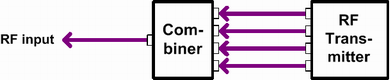

Composite MIMO
To test a WLAN unit with several antennas using only a single RF input port, the antenna signals must be combined externally.

Composite MIMO connector assignment
To facilitate the evaluation of measurement results, ensure that the RF connections between the individual antennas and the external combiner have the same physical properties, e.g. the same attenuation.